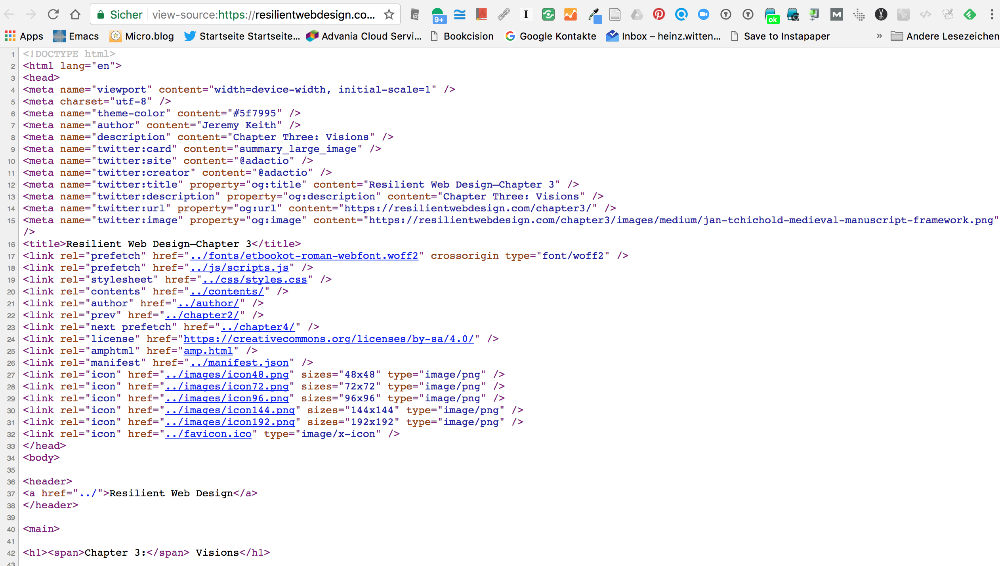
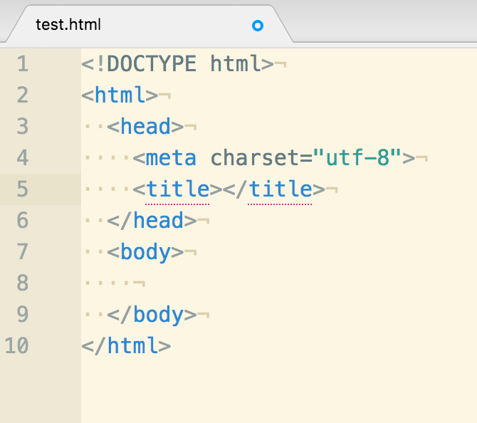

HTML for content authors
Heinz Wittenbrink
2017-12-04
Standardization
W3C

WhatWG
 { width=30% }
{ width=30% }
- HTML Standard
- Repository on GitHub: whatwg/html: HTML Standard
History of the standard: Beginnings
- 1992: Tim Berners-Lee: Tags used in HTML
- 1993: Hypertext Markup Language (HTML) Internet Draft
- 1995: RFC 1866 - The 'text/html' Media Type
Source: @2017c
History of the standard: W3C Recommendations
- January 1997: HTML 3.2 Reference Specification
- December 1997: HTML 4.0 Specification: strict - frameset - transitional
- 2000/2002: XHTML 1.0
Source: @2017c
History of the standard: WhatWG, W3C
- 2004: Gründung der Web Hypertext Application Technology Working Group(WhatWG)
- since 2006: Cooperation of WhatWG and W3C
- July 2012: Degree of separation (WhatWG: HTML as living standard, W3C: Snapshots)
- 2014: W3C-Specification HTML5
Sources: @2017c, @2017b
Design principles
Content first
- Separation of content and presentation
- Descriptive markup of content
- Additional markup for machines
Progressive enhancement
- Accessibility and future friendliness
- Universal usability of the content
- Device independence
Basic elements for authoring text
Block- and Inline-Elements
- Inline elements - HTML | MDN
- Block-level elements - HTML | MDN
- Important: The value of the
display-property can be changed via CSS (see display - CSS | MDN)
spanand div
spansays only: This is an inline element.divsays only: This is a block element.- Both elements are used mainly for formatting purposes in combination with the attributs
idandclass.
Headings
- Six levels from
h1toh6 - Important for SEO
- Since HTML5: Outlines allow more than one
h1-heading
Paragraphs
<p> ... </p>- Fundamental for structuring text
- Should not be used for presentation purposes
Lists
<p>I have lived in the following countries:</p>
<ul>
<li>Norway
<li>Switzerland
<li>United Kingdom
<li>United States
</ul>
<ol>
<p>I have lived in the following countries:</p>
<li>Switzerland
<li>United Kingdom
<li>United States
<li>Norway
</ol>
<dl>
<dt> Authors
<dd> John
<dd> Luke
<dt> Editor
<dd> Frank
</dl>- Three types:
ul,ol,dl - List items can include other blog level elements
Examples: @zotero-2358590-5495
Tables
<table>
<caption>Characteristics with positive and negative sides</caption>
<thead>
<tr>
<th> Characteristic
<th> Negative
<th> Positive
<tbody>
<tr>
<th> Mood
<td> Sad
<td> Happy
<tr>
<th> Grade
<td> Failing
<td> Passing
</table>Example: @zotero-2358590-5495
Links
<a href="https://google.com" title="Google Search">Google</a>- Links are the most important html elements
- They can reference document fragments
New Structural Elements in HTML5
div and span
divandspanwere (and are) used to structure HTML documents mainly for presentation purposes- They serve as a base for
idandclass-attributes - Their use has become obsolete by semantic HTML5 elements
Semantic Elements in HTML5
<article>
<aside>
<details>
<figcaption>
<figure>
<footer>
<header>
<main>
<mark>
<nav>
<section>
<summary>
<time>Simple Explanation: w3schools: HTML5 Semantic Elements
HTML and XML
Alternative syntax
- HTML/HTML5 can be written in HTML and XML Syntax
- Example of a Doctype Declaration in XHTML
<!DOCTYPE html PUBLIC
"-//W3C//DTD XHTML 1.1 plus MathML 2.0 plus SVG 1.1//EN"
"http://www.w3.org/2002/04/xhtml-math-svg/xhtml-math-svg.dtd">Siehe: W3C QA - Recommended list of Doctype declarations you can use in your Web document
Validation
W3C Validation
 { width=70% }
{ width=70% }
Browser Addons
HTML Tidy
- HTML Tidy Online{ width=70% }
Source Code
View Source
{ width=70% }
Developer Tools
 { width=70% }
{ width=70% }
HTML editing with Atom
Atom as open source editor
- Closely related to Github
- Using state of the art web technologies
- Extensiblie architecture
- Free as in "free speech" and free as in "free beer"
Relevant core packages
- language-html
- language-hyperlink
{ width=50% }
 { width=80% }
{ width=80% }
Command palette and snippets
If you press
Cmd+Shift+Pwhile focused in an editor pane, the command palette will pop up. (Atom Basics)
To see all the available snippets for the file type that you currently have open, choose "Snippets: Available" in the Command Palette. (Snippets)
Relevant community packages
- atom-beautify
- htmlhint
- linter-spell-html
- w3c-validation
 { width=80% }
{ width=80% }
 { width=60% }
{ width=60% }